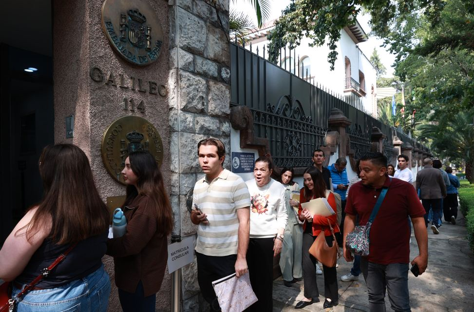

La Abogacía cifra en 113.326 los nacionalizados por la ‘ley de nietos’ afectados por la suspensión de voto del Supremo

Los servicios jurídicos del Estado reducen el número tras excluir a menores, inscritos en el censo de España y registros duplicados
Un total de 113.326 españoles nacionalizados por la llamada ley de nietos no podrán participar en las elecciones del 29 de noviembre como consecuencia de la suspensión del derecho al voto decretada por el Tribunal Supremo. Esa es la cifra final que ha aportado la Abogacía del Estado en un escrito presentado en la Sala de lo Contencioso-Administrativo, que mantiene desde septiembre paralizado el derecho al sufragio de quienes hayan obtenido la nacionalidad por a través de la Ley de Memoria Democrática, excepto si cuentan con un certificado que acredite que son hijos o nietos de exiliados políticos . Los servicios jurídicos del Gobierno cifraron de inicio los afectados por esa suspensión en…